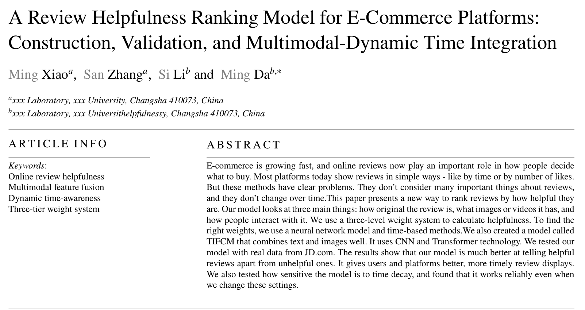

论文概要

本研究聚焦电商评论有用性排序问题，提出融合CNN与Transformer的TIFCM模型及三层动态加权体系，经真实数据验证有效，展现了多模态与时间感知的统计建模创新。
研究对比
| 文本 | 图像 | 视频 | 时间 | |
|---|---|---|---|---|
| 传统研究 | ✓ | ✕ | ✕ | ✓ |
| 本研究 | ✓ | ✓ | ✓ | ✓ |
创新点
- 多模态特征的深度融合与语义一致性挖掘
- 差异化的评论有用性计算框架设计
- 动态时间感知的三层加权体系构建
论文基于第十一届全国大学生统计建模大赛国家三等奖项目深化